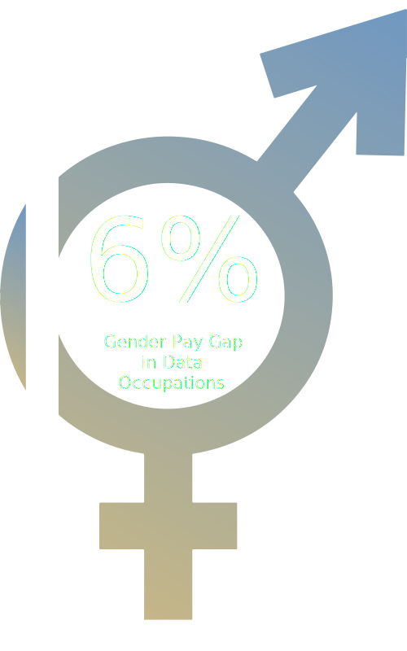

Envision Equality
Data to Dismantle Gender Discrimination in the Field of Technology
Pay Gap
This illustration displays my gender pay gap analysis from the Brent Ozar Unlimited dataset. I chose to combine the gender symbols into one graphic to represent unity. I then removed 6.37% of the image to simulate the 6.37% gender pay gap in professional data occupations.
